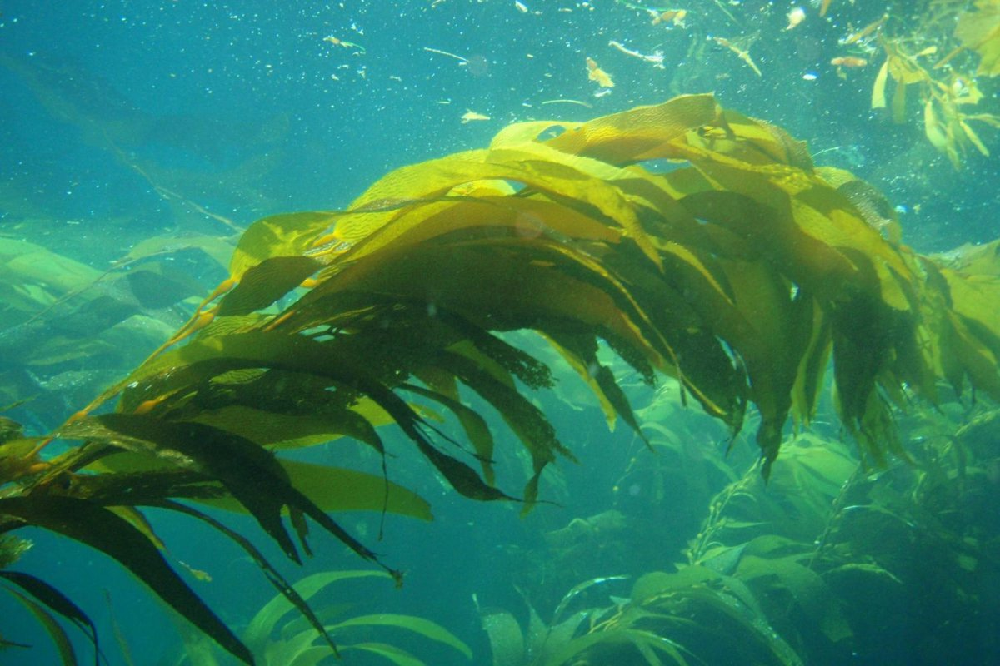
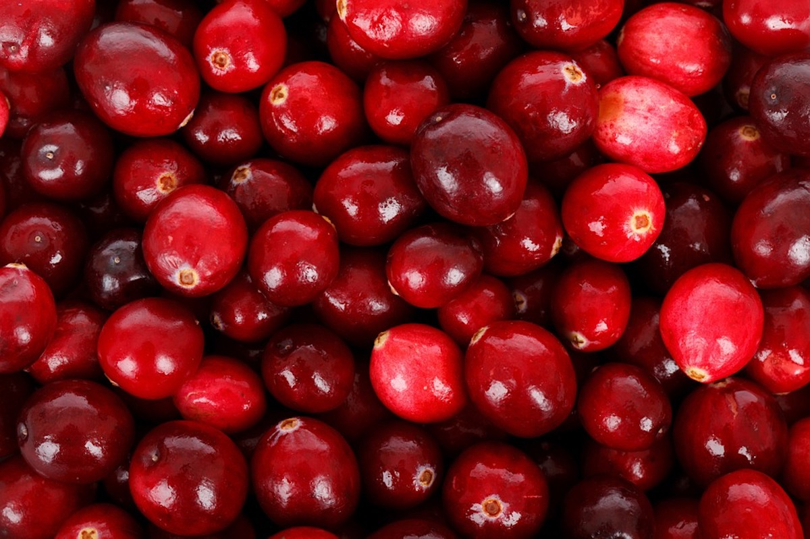

Информация о наших батончиках
1. Много вкусов!
В наших батончиках есть 3 вкуса! А именно:
- Клюква-Голубика
- Яблоко-Киви
- Банан-Грецкий Орех

2. Много полезного белка!
Мы добавляем чистый белок, выведенный из водорослей, ведь людям нужно получать достаточно белка
3. Клюква присоединилась ко вкусам нашего батончика!
Легендарная как Леон ягода, чуть ли не являющаяся символом ХМАО!